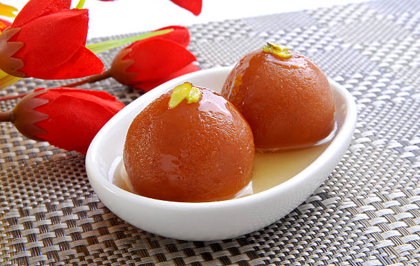

Kadhai Paneer
Ingredients
- 200g paneer (cubed)
- 1 large onion (sliced)
- 1 large capsicum (sliced)
- 2 tomatoes (pureed)
- 2 tablespoons oil
- 1 teaspoon cumin seeds
- 1 tablespoon ginger-garlic paste
- 1 teaspoon red chili powder
- 1 teaspoon coriander powder
- 1/2 teaspoon turmeric powder
- 1/2 teaspoon garam masala
- Salt to taste
- 1 teaspoon kasuri methi (crushed)
- Fresh coriander leaves (for garnish)
Recipe
- Heat 1 tablespoon oil in a pan. Lightly sauté the paneer cubes until golden. Remove and set aside.
- In the same pan, add another tablespoon of oil and heat cumin seeds until they splutter.
- Add sliced onions and sauté until they turn golden brown.
- Add ginger-garlic paste and sauté for a minute until fragrant.
- Add the tomato puree and cook until oil separates.
- Mix in red chili powder, coriander powder, turmeric, salt, and garam masala. Cook the spices for 1–2 minutes.
- Add sliced capsicum and cook for 3–4 minutes. Keep them slightly crunchy for best flavor.
- Return the sautéed paneer to the pan and mix gently to coat with the masala.
- Crush kasuri methi between your palms and add it to the dish. Mix well.
- Garnish with fresh coriander leaves and serve hot with roti, naan, or rice.

Gulab Jamun
Ingredients
- 1 cup milk powder
- 1/4 cup all-purpose flour (maida)
- 1/4 teaspoon baking soda
- 2 tablespoons ghee (clarified butter)
- 2–3 tablespoons milk (as needed to make dough)
- Oil or ghee for deep frying
- 1 and 1/2 cups sugar
- 1 and 1/2 cups water
- 4–5 cardamom pods (crushed)
- 1/2 teaspoon rose water (optional)
- Saffron strands or chopped pistachios for garnish (optional)
Recipe
- In a bowl, mix milk powder, flour, baking soda, and ghee.
- Gradually add milk to form a soft, smooth dough. Rest it for 10 minutes.
- Meanwhile, prepare the sugar syrup: boil sugar and water together, then add cardamom and rose water. Keep it warm.
- Divide the dough into small smooth balls without cracks.
- Heat oil/ghee on medium-low flame and deep-fry the balls until golden brown. Stir gently for even coloring.
- Remove and immediately soak them in warm sugar syrup for at least 1–2 hours.
- Garnish with saffron or pistachios if desired, and serve warm or chilled.
